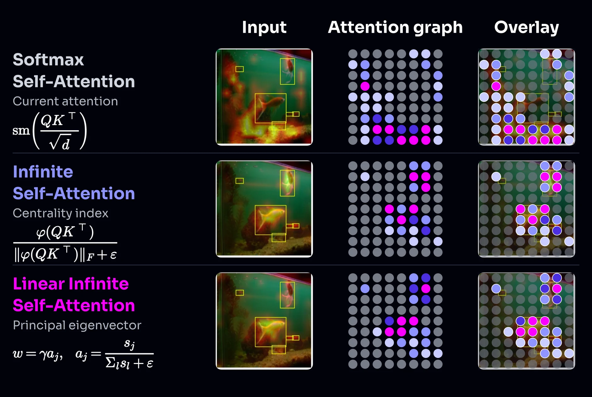
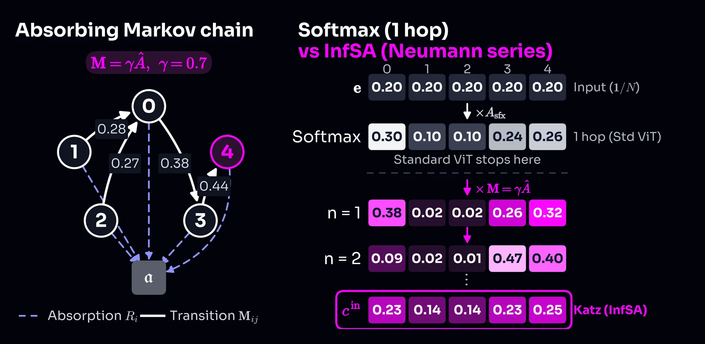
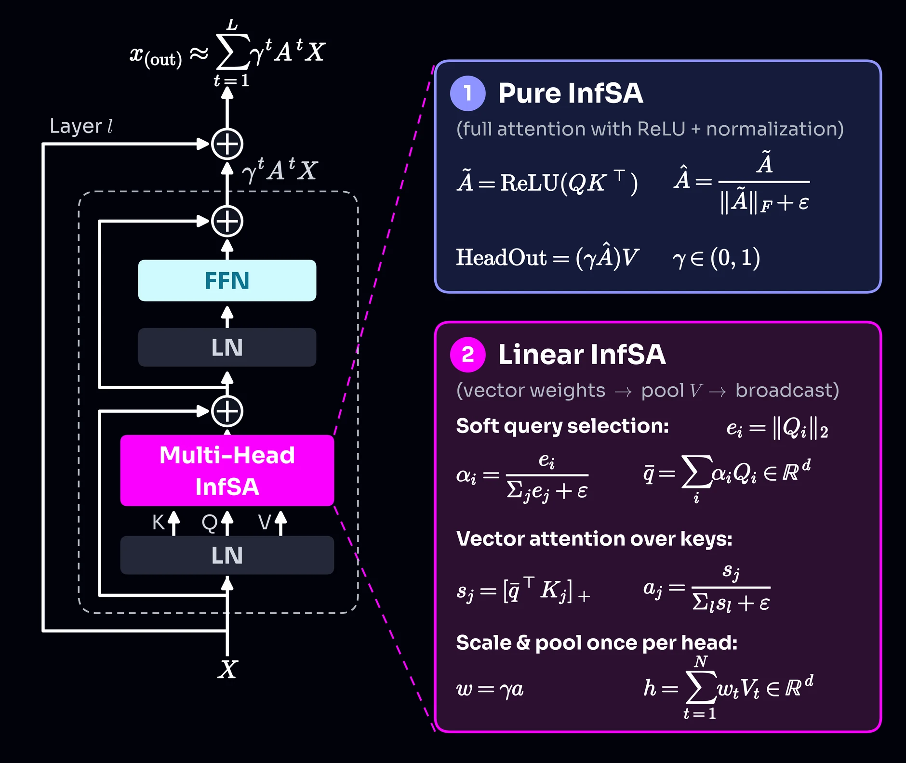
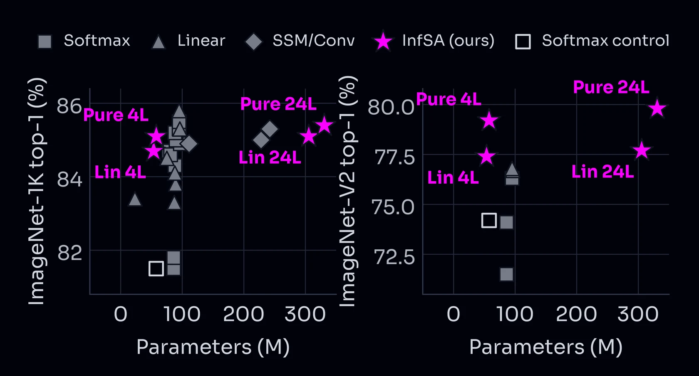
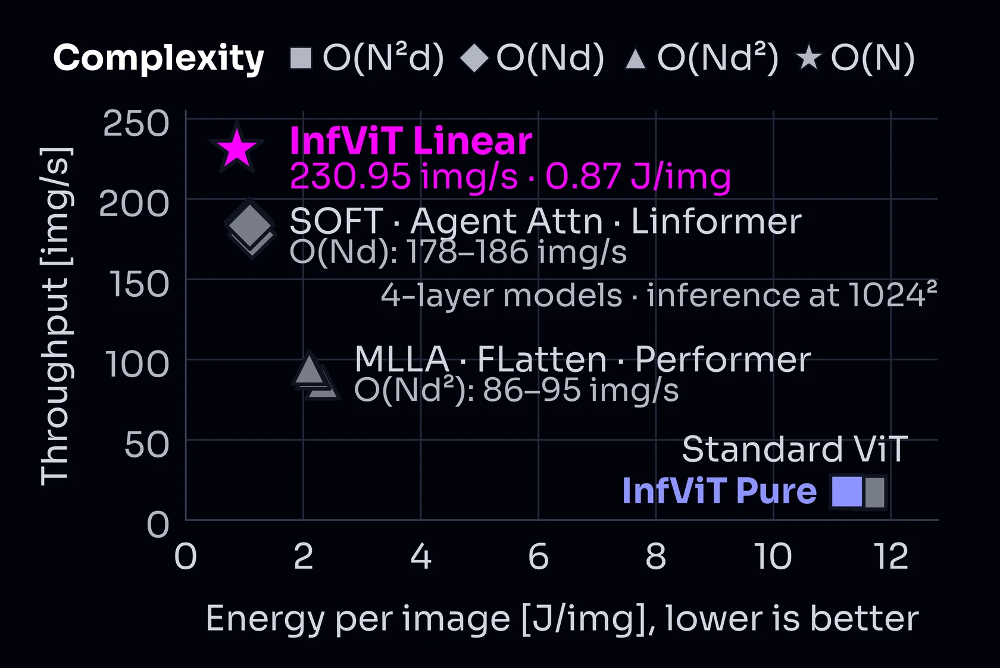
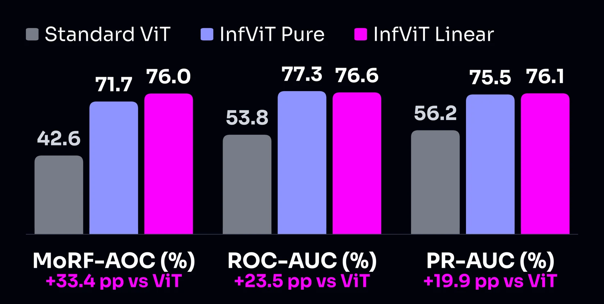
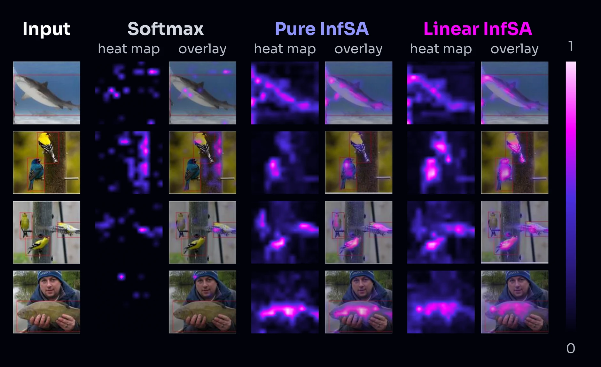
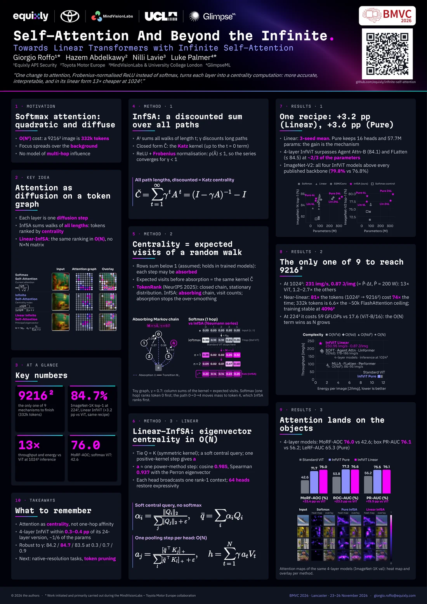

“One change to attention, Frobenius-normalised ReLU instead of softmax, turns each layer into a centrality computation: more accurate, interpretable, and in its linear form 13× cheaper at 1024².”
01 · Abstract
The paper in one paragraph.
The quadratic cost of softmax attention limits Transformer scalability in high-resolution vision. We introduce Infinite Self-Attention (InfSA), a spectral reformulation that treats each attention layer as a diffusion step on a content-adaptive token graph, accumulating multi-hop interactions through a discounted Neumann series over attention matrices. This connects self-attention to classical graph centrality (Katz, PageRank, eigenvector centrality), yielding interpretable, structurally grounded token weighting. The same kernel is the fundamental matrix of an absorbing Markov chain, so a token’s centrality equals its expected random-walk visits before absorption. We then propose Linear-InfSA, an O(N) variant that approximates the principal eigenvector of the implicit attention operator without forming the N × N matrix. It maintains an auxiliary state of fixed size O(d), independent of the sequence length N, is drop-in compatible with standard Vision Transformers, and supports stable training at 4096² and inference at 9216² (∼332k tokens). Integrated into a 4-layer ViT with 53.5M parameters and 59 GFLOPs at 224², Linear-InfSA achieves 84.7% top-1 on ImageNet-1K, a +3.2 pp purely architectural gain over a standard 4-layer ViT baseline (81.5%) trained with an identical recipe. On ImageNet-V2, all InfViT variants surpass every compared baseline (up to 79.8% vs. 76.8% for the best prior method), indicating robust generalization. Attention maps are semantically grounded: MoRF-AOC reaches 76.0% and bounding-box PR-AUC 76.1%, versus 42.6% and 56.2% for softmax ViT. On an A100 40 GB GPU, Linear-InfViT sustains 1024² inference at 231 img/s and 0.87 J/img, a 13× improvement in throughput and energy over a standard ViT of equal depth, and is the only tested model to complete 9216² inference without running out of memory. The linear approximation recovers the dominant eigenvector of the full quadratic operator (cosine similarity 0.985).
02 · Key idea
Attention as diffusion on a token graph.

Softmax attention: quadratic and diffuse
- O(N²) cost: a 9216² image is 332k tokens
- Focus spreads over the background
- No model of multi-hop influence
InfSA: centrality instead of one-hop affinity
- Each layer is one diffusion step
- InfSA sums walks of all lengths: tokens are ranked by centrality
- Linear-InfSA: the same ranking in O(N), with no N × N matrix
03 · Method
From a sum over all paths to O(N).
1 · InfSA
A discounted sum over all paths
- At sums all walks of length t; γ discounts long paths
- The closed form is the Katz kernel (up to the t = 0 term)
- ReLU and Frobenius normalisation give ρ(Â) ≤ 1, so the series converges for γ < 1
2 · Markov chain
Centrality = expected visits of a random walk
- Rows sum below 1 (assumed; holds in trained models): each step may be absorbed
- Expected visits before absorption = the same kernel
- Absorption stops the over-smoothing of a closed chain
3 · Linear-InfSA
Eigenvector centrality in O(N)
- Tie Q = K; a soft central query; one positive-kernel step
- About one power-method step: cosine 0.985, Spearman 0.937 with the Perron eigenvector
- Each head broadcasts one rank-1 context; 64 heads restore expressivity


04 · Results
More accurate, cheaper, and on the objects.




What to remember
- Attention as centrality, not one-hop affinity
- A 4-layer InfViT is within 0.3–0.4 pp of its 24-layer version, with about 1/6 of the parameters
- Robust to γ: 84.2 / 84.7 / 83.5 at 0.3 / 0.7 / 0.9
- Next: native-resolution tasks and token pruning
05 · Poster
See us in Lancaster.

BMVC 2026 · Lancaster Town Hall
Poster Session 6
Wednesday 25 November
13:30–15:15
Material
06 · BibTeX
Cite the paper.
@inproceedings{roffo2026infsa,
title = {Self-Attention And Beyond the Infinite: Towards Linear Transformers with Infinite Self-Attention},
author = {Roffo, Giorgio and Abdelkawy, Hazem and Lavie, Nilli and Palmer, Luke},
booktitle = {37th British Machine Vision Conference 2026, {BMVC} 2026, Lancaster, UK, November 23-26, 2026},
publisher = {BMVA},
year = {2026},
eprint = {2603.00175},
archivePrefix = {arXiv}
}